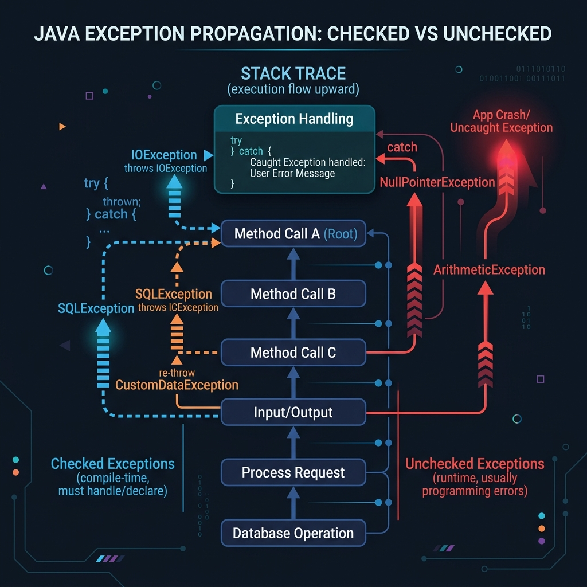

In Java, when an exception occurs inside a method, it doesn't just stop there. If it is not caught, it drops back down to the method that called it, and then to the method that called that one, and so on. This journey is called exception propagation.
However, checked exceptions and unchecked exceptions behave very differently during this propagation journey. Let's explore why using Java propagation examples.

Imagine a factory assembly line:
- Unchecked Exceptions (Runtime): An entry-level worker encounters a minor glitch. They don't know how to fix it, so they pass the problem to their supervisor, who passes it to the manager. The problem escalates automatically up the hierarchy until someone handles it or the factory shuts down.
- Checked Exceptions (Compile-time): A major hazardous event occurs. The worker is legally forbidden from passing it up the chain unless they explicitly warn their supervisor beforehand, or solve it on the spot with a safety net. The compiler enforces this safety check at build time.
1. Unchecked (Runtime) Exception Propagation
By default, unchecked exceptions (subclasses of RuntimeException) propagate automatically down the call stack if they are not caught:
class RunTimeExceptionPropagation {
void m() {
int data = 50 / 0; // Throws ArithmeticException (Unchecked)
}
void n() {
m(); // Call bubbles up
}
void p() {
try {
n();
} catch (Exception e) {
System.out.println("Exception handled in p()");
}
}
public static void main(String args[]) {
new RunTimeExceptionPropagation().p(); // Outputs: Exception handled in p()
}
}Because ArithmeticException is unchecked, the methods m() and n() don't need to declare anything. The exception naturally bubbles up until it finds the catch block in p().
2. Checked (Compile-Time) Exception Propagation
Checked exceptions do not propagate automatically. If a method throws a checked exception, it must either handle it or declare it in its signature using throws. Otherwise, the code will fail to compile:
import java.io.IOException;
class CompileTimeExceptionPropagation {
void m() throws IOException {
throw new IOException("Device error"); // Checked exception
}
void n() throws IOException {
m(); // Must declare 'throws IOException' to propagate it
}
void p() {
try {
n();
} catch (IOException e) {
System.out.println("Handled checked exception: " + e.getMessage());
}
}
public static void main(String args[]) {
new CompileTimeExceptionPropagation().p();
}
}Here, the compiler forces both m() and n() to declare throws IOException. If you remove the throws declaration, the compilation fails, forcing you to think about error handling beforehand.
Conclusion
In Java:
- Unchecked exceptions propagate automatically down the call stack.
- Checked exceptions require explicit handling or declaration at every step of the call stack.